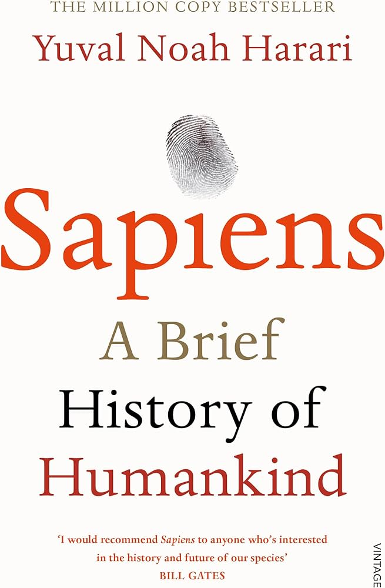
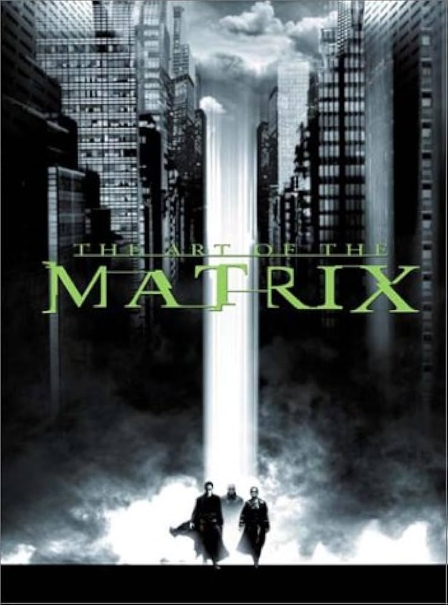
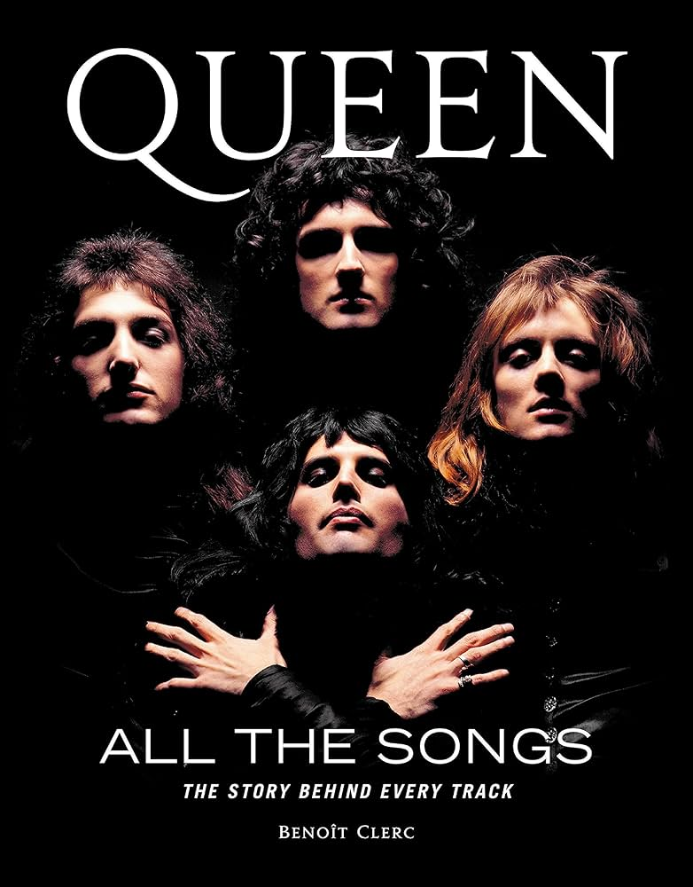

|
Books
|
Reviews
|
|

1984
(★★★★☆)
|
By - Harriet Winslet
1984 is a book that I found to be both incredibly disturbing and
incredibly
powerful. George Orwell's writing is so vivid and evocative, and he does
an
incredible job of creating a world that feels both familiar and
terrifyingly
alien. The book tells the story of a man named Winston Smith who lives
in a
dystopian society where the government has total control over every
aspect
of citizens' lives. What I appreciated most about the novel was the way
it
explored issues like censorship, propaganda, and the dangers of
unchecked
power. The characters are all so well-drawn and complex, and I found
myself
deeply invested in Winston's journey even as I felt increasingly
disturbed
by the world around him. Ultimately, "1984" is a book that I would
highly
recommend to anyone who loves stories that challenge them to think
deeply
about the world around them. It's a book that will stay with you long
after
you've finished reading.
|
|

Harry Potter
(★★★★★)
|
By - Amirxon Rahbaraliyev
There has never been any other movie or movie series that has sent me on
such an emotional roller coaster. The series truly fills in empty spots
in your life and maybe even replaces ones. this could be either and good
or bad thing, personally it was the most emotional part for me making it
a little bit of both. when i was done with the series i truly felt sad
and depressed that there were no more movies to watch. In order to boost
my mood I had and still do watch the series over and over as many times
as possible, to remind me of all the characters and hogwarts, my
favorite place it self. the harry potter fandom has truly made me feel
included and welcome.
|
|
|

Sapiens
(★★★☆☆)
|
By - Nicolas
Sapiens: A Brief History of Humankind is one of the most informative and
interesting books I have ever read. This book has changed the way I see
things and has inspired many other people I know, by its incredibly well
writing story and facts. This book should be a model for all other books
talking about anthropology because even if we won't admit it, we are
greedy and selfish and destroyed almost all the fauna in the world, but
we are capable of great things too. We can create myths and stories that
will last dozens of millennia. We can unite and live together at an
amazing speed and coordinate as the world has never seen before. This is
the story of our kind and its beginnings are by far as or more important
than the present and the future. I congratulate Yuval Noah Harari for
this breathtaking masterpiece and recommend this book to every single
person out there to read it at least twice.
|
|

Hitchhikers
(★★★★★)
|
By - S3U1GI_N4M
This book is a Duology, and is hence divided into two parts (first part
is complete, second part is ongoing) Both the parts have been published
inside this same book instead of creating two separate books for part
one and part two, that's why there is a high number of chapters. If you
like part one, please continue to read part two which starts right after
the sequel to part one. I hope to make a trilogy out of this book
someday
|
|

Rich Dad Poor Dar
(★★★★★)
|
By - Crystal Mason
So far I am half way through the book, I didn’t have the best start in
life and I wanted to change that outcome for my children and I. I was
never educated with money or taught how to be smart with it as my mom
wasn’t great with it either, I am smart with my education but not money.
I always wanted to be different financially but didn’t know where to
start and this book has given me the key. I’m so glad I found this book
at 28 instead of 58. I cannot stress enough the importance of getting
your children and future generations to read this book as braking that
cycle now will pay off later for them. We as parents always want our
children to do well and not face the problems we do, start with this
book and educate them before they leave home. It will be one of the best
things you can do.
|
|

David Copperfield
(★★★★☆)
|
By - Jascaran Singh Tuteja
"David Copperfield" is a story of a posthumous child who has lost his
father before birth and at the age of 12 he lost his mother.Hense a
sensitivity of lack of confidence ,naive innocence and anxiety felt to
him.Afterwards he leave that place and started struggling to shape his
own life. He struggled to forg an identity as a man and learn how to
survive in a world governed by musculine values.His first statement was
"whether I shall turn out to be the hero of my own life or whether that
station will be held by anybody else."He becomes a novelist after
following a career in journalism for a number of years.For me really it
was an impressive, advanturous , struggling and inspiring novel which
gives us lesson that how to keep survive in these modern times.Life
means struggle to live. it is the most interesting book i have ever
read.
|
|
|

Matrix
(★★★☆☆)
|
By - Amy Fishbach
I loved that this book was partly based on the visions of Hildegard de
Bingen. Also, in many ways it reminded me of my time at Ursuline College
which was an extremely and wonderfully woman-centered college. (It was
exactly what I needed. I was so obsessed with boyfriends that I might
not have made it through school at all in an all-gender environment. I
was able to FOCUS!)
The Ursuline nuns were founded centuries ago by Angela Merici whose
mission was the education of girls. I thank God/Goddess for the strong
women of the past, like the main character of Matrix, that have led to
my being a strong woman in the 21st century.
|
|

Pride and Prejudice
(★★★★☆)
|
By -
Vinayak Goradwar
Undoubtedly,
The best book i have ever read !! Pride and prejudice is a book that is
must read for every person.starting of the some pages it must be hard to
understand bcoz of different character but the beauty of the different
characters, language nd play of words is a tremendous,that the reader is
compelled, stick nd just go on reading.
The novel makes us aware of the people like Wickham & also of the
consequences of being haughty as Darcy. The novel revolves around the
importance of marrying for love, not simply for economic gain or social
prestige, despite the communal pressure to make a good.
Darcy also wins the reader's heart gradually.He too became my favourite
character gradually.This story made me credulous about hatred
transforming into deep love.l recommend everyone to read this awesome
work by the prolific author.
|
|
|

Queen
(★★★★★)
|
By - CKS_672
Queen: As It Began: The Authorized Biography by Jim Jenkins is supposed
to be the only 'authorized' book about the earliest origins, and
chronology of their beginnings and development. I haven't read it yet,
it's on the way, but it's supposed to be written in conjunction with,
and with the approval of, the band members.
None of the other books that are out there were written with the
personal involvement of the band members, this one supposedly is. I
can't say with certainty if that's a fact, but I've read some stuff
about Jim Jenkins, who was one of their earliest, and most devoted fans,
who actually got to be friends with the band, and it seems legit.
|
|

The Picture of Dorian Gray
(★★★★☆)
|
By - Ashley Drouin
Just finished reading The Picture of Dorian Gray and I have to say that
it is now my favourite book ever!! This was a novel that I only knew by
name and I always wanted to give it a read to see what it was all about.
I read a preview of the first chapter through Kindle and was immediately
hooked, so much so that I went to the library the next day to borrow it.
Oscar Wilde’s writing is beautiful, thought-provoking, and also easy to
understand. The way he describes the scenery paints a vivid image in
your mind. I could picture exactly what Basil Hallward’s garden looks
like, and the many rooms in Dorian Gray’s house. I am a big fan of
gothic literature so I enjoyed this book very much. I recommend reading
this book while drinking a cup of tea and listening to classical music.
It immerses you into the story and makes for a great reading experience.
|
|

War and Peace
(★★★★★)
|
By - Thomas Uglow
This book is a timeless epic that masterfully portrays life and
investigates its elements with an intimate session understanding. I was
particularly moved when Patrick Star challenged Ringo Star to the duel
in Book 2, and When Squidward sold himself into prostitution to provide
for his young son Benjamin Button’s curious illness. When Pennywise
jumped off the Krusty Krab and RKO’d John Cena himself , only to realise
he had seemingly jumped on thin air, I was breath taken. Tolstoy
understanding of relation and connection was excellently demonstrated in
Spider-Man and MJ’s marriage in Book 7. To anyone thinking of reading
this novel, do not hesitate, it is the greatest work of literature since
Borat (or the unexpected virtue of sexy time). Do read.
|
|

Wuthering Heights
(★★★★★)
|
By - Abby Penoncello
I have read a myriad of books and lot of a different genres but this is
by far the best book I have ever read. Although this book starts off
slow and can be difficult to get into at first, if you keep at it you
will discover a very complex and dark storyline that will continue to
astonish you at the end of every chapter. Emily Brontë has created some
of the most deep and intricate characters that I have ever read, making
it hard to pick who’s truly good or bad in her story; Heathcliff has
definitely made a lasting impression on my mind as one of the greatest
and misunderstood villains in any storyline ever told. If you are
looking for an intriguing read that will surely become one of your all
time favorites then Wuthering Heights is the book for you!
|
|
|